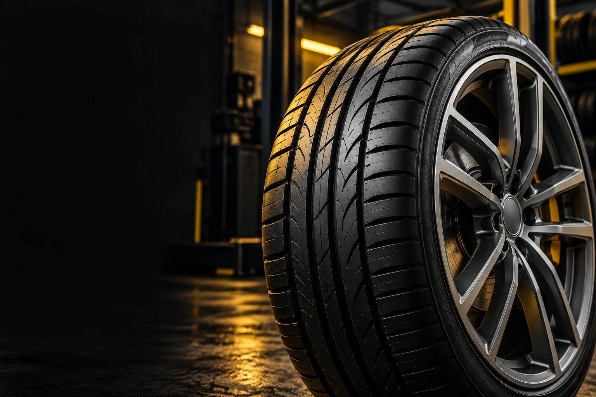
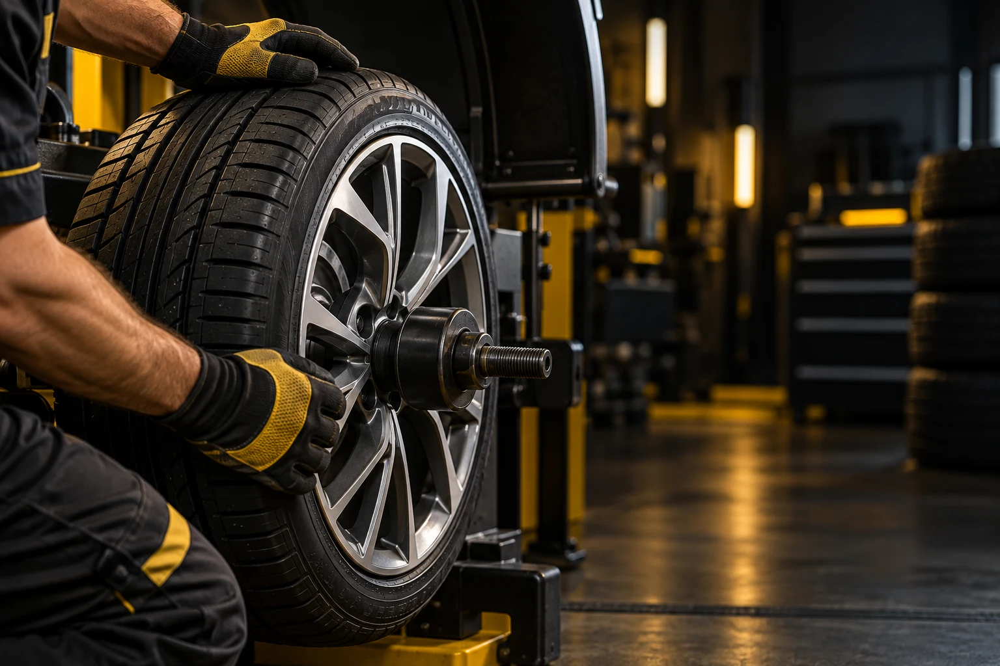

01
Шиномонтаж
Монтаж і демонтаж шин. Зміна сезонного комплекту або встановлення нових шин.

ТВОЄ АВТО. ТВОЯ ДОРОГА.
Заміна шин, балансування та ремонт коліс.
«Лев Гараж» на Чорновола, 45а.
Прокол, вібрація чи новий сезон? Обери потрібну послугу — решту обговоримо перед візитом.
Монтаж і демонтаж шин. Зміна сезонного комплекту або встановлення нових шин.
Після заміни шин або коли відчуваєш вібрацію керма чи кузова на швидкості.
Усунення проколів та пошкоджень. Спосіб ремонту визначаємо після огляду.
Прокатка та відновлення геометрії диска після ями чи удару, якщо ремонт можливий.
Сезонний комплект без зайвого місця вдома. Умови й наявність місць уточни у майстра.
Розкажи про своє авто й проблему. Для пошкодженої шини або диска надішли фото в Direct.
Написати в Instagram
Рівний диск. Збалансоване колесо. Правильно встановлена шина. Починаємо з огляду та підбираємо роботи під стан твоїх коліс.
Наш InstagramМожливість ремонту шини чи диска визначає майстер після огляду.
Зателефонуй або напиши в Instagram. Назви модель авто, розмір коліс і потрібні роботи.
Обговори вартість, актуальний графік і час приїзду. Для ремонту надішли фото пошкодження.
Знайдеш нас біля ТРЦ Forum Lviv. Майстер огляне колеса й узгодить потрібні роботи.
Вартість залежить від діаметра коліс, типу шин і потрібних робіт. Назви ці дані телефоном +38 (098) 343 95 40 або в Instagram, щоб уточнити ціну перед візитом.
Перед приїздом зателефонуй або напиши в Direct, щоб уточнити завантаженість майстерні та зручний час. Особливо під час сезонної заміни шин.
У «Лев Гараж» є прокатка та вирівнювання дисків. Можливість відновлення залежить від матеріалу й характеру пошкодження. Надішли фото для попереднього обговорення та домовся про огляд.
У каталозі List.in.ua зазначено: понеділок–субота 08:00–19:00, неділя — вихідний. Актуальні години та можливість обслуговування в інший час уточни телефоном перед приїздом.
Львів, проспект В’ячеслава Чорновола, 45а, біля ТРЦ Forum Lviv. Відкрити адресу на карті.
Львів, проспект В’ячеслава Чорновола, 45а.
Біля ТРЦ Forum Lviv.
просп. В’ячеслава Чорновола, 45а, Львів
Пн–Сб 08:00–19:00
Нд Вихідний